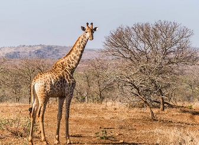
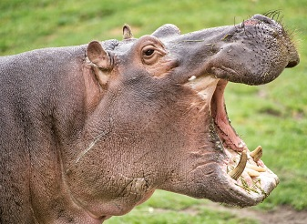

非洲最大陆生动物，群居温顺。 African Elephants are the world's largest land animals, weighing up to (6.6 tons). They are one of the most unique-looking animals, too. With their characteristic long noses, or trunks; large, floppy ears; and wide, thick legs, there is no other animal with a similar physique. The African Elephant is an intelligent, sociable and familial animal, and despite the threat it attracts due to its Ivory, the great news is that numbers are up in Kenya over the last couple of years. They are found in large numbers in Amboseli and Masai Mara among other parks and reserves in Kenya. Read more about the African Elephant here.

性情暴躁，群体防御力强。 African Bufallo is one of the ´´Big Five´´ and is often referred to as one the most dangerous animals in Africa. There are four subspecies of African Bufallo and Cape Bufallo is the most common of the four. They’re distinguished by coloring, size, and even horn shape. There’s also the forest buffalo, the West Africa savanna buffalo, and the Central Africa savanna buffalo. Buffalo are often pictured covered in mud with a bird on their back. The mud helps buffalo get rid of ticks and parasites that hasp onto their skin. Both Male and Female Bufallo has large horns which they use as weapon and for defense. African Bufallos have excellent eyesight, hearing, and a sense of smell that helps them detect the presence of lions, their greatest enemies. They communicate mostly through ritualized body movements and postures. These animals appears in great numbers in all major parks in Kenya, with the exception of Nairobi National Park.

群居顶级捕食者，雌狮主攻。 Lions are the largest of Africa's big cats and the only cats that live in groups, which are called prides. It is estimated that there are close to 2,000 in Kenya's National Reserves and Parks. In Masai Mara National Reserve and surrounding conservancies that border the reserve the estimated number of lion population is close to 850 to 900. The 'Mara' as it is also known is generally considered one of the best places in Kenya and East Africa to see these magnificent animals in the wild on a Safari. Individual Lions (males) can hold huge territories ranging from 30 to 400 square kilometers. The lionesses (females) take the lead when it comes to hunting down the prey. From time to time the Males will assist with a hunt. Read more about [Masai Mara Lions](https://www.masaimara.travel/lions-masai-mara.php) in detail at this page.
独居善爬树，夜间捕猎。 The Leopard (Panthera Pardus) is counted as one of the Big Cats and is one of the five species in the genus Panthera. Its distinguished by its well-camouflaged fur, opportunistic hunting behaviour, broad diet, strength, and its ability to adapt to a variety of habitats ranging from rainforest to steppe, including arid and montane areas. Leopards are spectacular hunters, famous for their incredible agility and strength to climb trees while dragging a kill that is sometimes heavier than their body weight and they can run at speeds of up to 58 kilometres per hour. Though Leopards can be found in healthy numbers in some the major parks in Kenya, these elusive animals are nonetheless listed as vulnerable on the IUCN Red List because leopard populations are threatened by human encroachment and habitat loss. Leopards almost always hunt on their own and are by nature 'shy', preferring to hunt at night.

厚皮有角，受盗猎威胁。 Rhino is one of the five extant species of odd-toed ungulates in the family Rhinocerotidae, as well as any of the numerous extinct species. Black Rhinos which are found in large numbers in Ol Pejeta and Lewa Conservancy as well as other parks are smaller than the white rhinos commonly found at Lake Nakuru. Black Rhino are also more aggresive species compared to White Rhino, and they use their horns during mating and fighting, as well as when defending themselves from predators. They also use their hooked lip to browse shrubs and prefer thick bush habitat.

陆地速度最快，日间猎手。 The cheetah is the world's fastest land mammal, capable of running at 80 to 128 km/h, and as such has several adaptations for speed, including a light build, long thin legs and a long tail. They are mainly active during the day and hunting is the major activity, with peaks during dawn and dusk. Similar in appearance to the leopards, the Cheetah is longer and lighter in the body. It has a slightly bowed back and a much smaller and rounder face. It stands around 80cm at the shoulder, measures around 210cm in length (including the tail) and weighs anything from 40 to 60kg. It's found in small numbers in all of Kenya's major game reserves.

世界最高哺乳动物，食树叶。 Giraffe ( Giraffa) is an African artiodactyl mammal, the tallest living terrestrial animal and the largest ruminant. They are known for their graceful movements even when running at their fastest speed of 50 to 60 km per hour. The giraffe's chief distinguishing characteristics are its extremely long neck and legs, its horn-like ossicones, and its distinctive coat patterns. There are two main sub species of Giraffe found in Kenya, the Reticulated or Somali Giraffe in Northern Kenya, and the Maasai Giraffe in southern Kenya including Masai Mara. It is estimated that close to 33,000 Maasai giraffe are alive in the wild in Kenya.

水栖体型大，夜间上岸取食。 The Hippopotamus are large, round, water-loving animals that are native to Africa. They are commonly referred to as Hippo and are the third largest land mammal with the average adult males weighing in at close to 1500 kilos. Hippos typically inhabit swamps, rivers, and areas close to the lake shore, and remain cool by staying in the water during most of the day. They are found in greatest numbers in Lake Nakuru National Park and other major parks such as Masai Mara National Game Reserve, Amboseli, Nairobi and Tsavo National Parks as well as Lake Baringo.

群居草食，黑白条纹识别。 Zebras are single-hoofed animals native to Africa. They are generally social animals that live in small harems to large herds. There are three species of zebras: the plains zebra, the mountain zebra and the Grévy's zebra. Masai Mara is home to the plains Zebra while the Grevy's Zebra with their unique thinner stripes are found in Samburu Reserve, Northern Kenya. Grévy's zebra and the mountain zebra are endangered. While plains zebras are much more plentiful.
夜行掘食蚂蚁白蚁。 The Aardvarks are nocturnal animals that feed on insects, mainly ants and termites and they chew with their stomach. They are small to medium sized burrowing mammals with a long snout and powerful claws, native to Africa. They have a hairless body with a pronounced arched back and short legs. The thick claws on the forefeet are well adapted for burrowing and digging.
食蚁性犬科，夜行胆小。 Aardwolf is an insectivorous carnivore, yellowish in colour with vertical black stripes and a bushy black-tipped tail and resembles a small striped hyena. The shy, mainly nocturnal aardwolf lives on the arid plains of Africa. It has a long coarse ridge of erectile hairs along the length of the back, sturdy shoulders, and longer front than hind legs. However, Aardwolf is less of a runner and has five toes on the front feet instead of four. They are solitary and they rest in burrows during the day before becoming active at night. Their territory is between 1 and 4 square kilometres, depending on food availability, and they mark it with urine, dung and secretions from their anal glands.
夜行善奔，依靠伪装脱险。 African hares is nocturnal medium-sized mammal species in the family Leporidae, native to Africa. They live mainly solitary lives, though they sometimes form groups of two or three when eating and use their senses of hearing, smell, and sight to avoid predators. They rely on camouflage to stay hidden, but can run at up to 70 kilometres (43 mi) an hour and sometimes leap vigorously sideways to break the scent trail they are leaving. African hares are 20 inches long, weighs between 1.5 to 3 kilograms (3.3 to 6.6 lb) and feeds on leaves, buds, roots, berries, fungi, bark and twigs. The life span of the African hare is 12 years.

群猎协作高效，极濒危。 The East African wild dog is a subspecies of African wild dog native to East Africa. It is distinguished from the nominate Cape subspecies by its smaller size and much blacker coat. The wild dogs have only four toes per foot, whereas our domestic dogs have five on their forefeet. And even with this missing digit, they can reach speeds between 40 and 50 miles per hour. The African Wild Dogs are listed as endangered species, mainly due to habitat loss and disease. In Kenya the populations in the wild are estimated to be between just three and five thousand. Laikipia- Samburu ecosystem is home to the largest population of wild dogs resident within Kenya, and the sixth largest wild dog population in the world! The largest populations are in Southern Tanzania, particularly in Nyerere National Park. Read more about [Animals in Nyerere National Park](https://www.nyererenationalpark.net/animals-wildlife-nyerere-selous.php) in detail at this page.
角常不脱落，多样化草食者。 Antelope is a deer-like mammal found in Africa, and can be found in a wide range of habitats, typically woodland, forest, savannah, grassland plains, and marshes. Unlike deer that renew their horns annually, the antelope has strong permanent horns, that come in a variety of sizes and show true diversity and imagination with their head gear. They’re the unsung beauties of the bush and the grassland. They also use their horns to defend their herd or to fight other antelopes. There are 3 sub species, namely the Kirk's Dik-Dik, klipspringer, and Oribi Antelope.These animals can be found in large numbers in major of the National parks and Reserves in Kenya.
群居小型食肉，善捕蛇。 Banded mongooses are small, catlike carnivores native to Africa. They are characterised by triangular shaped, pointed faces and flat broad ears. They are about 12-18 inches (30-45 centimeters) long with a 6-12 inch (15-30 centimeter) long tail. They weigh 3-5.5 pounds (1.5-2.5 kilograms). They are brown or grey in colour and are easily identifiable by the dark bands across the back which stretch from shoulder to the tail. They are commonly seen in groups in Tsavo, Amboseli and Masai Mara reserves. They are famous for their ability to kill snakes and are one of the most social mongoose species, living in packs of up to 20. They have developed a vocabulary of calls to communicate with each other, as well as anal and cheek glands to scent-mark their territory.

巨耳散热，主食白蚁。 Bat eared fox is a nocturnal animal species belonging to the dog family. Commonly found in open, arid areas of eastern and southern Africa. It is yellowish grey with black face and legs and black-tipped ears and tail. Their large, bushy tails work as a rudder when fleeing from predators in a zig-zag pattern. They are highly social so if you spot one, keep your eye out for more. They feed mostly on small invertebrates such as ants, termites, spiders, scorpions and crickets. They will also eat small birds, mammals and reptiles, and even desert truffle.

夜行树栖，跳跃力强。 Bushbaby also called Galagos are small, nocturnal animals that spend most of their lives on the tress. They are gray, brown, or reddish to yellowish brown, with large eyes and ears, long hind legs, soft, woolly fur, and long tails. They have strong back legs that enable them to jump more than 5-6 feet in a vertical direction. They are agile, speedy climbers and their long tails give them added balance. They feed on fruits, insects, and even small birds, but a major component of the diet of most species is gum that oozes out of certain tree species.
雄性具角，斑纹隐蔽。 Bushbuck are the most common and widespread kind of African antelopes. The bushbucks have a light brown coat, with up to seven white stripes and white splotches on the sides. The muzzle is also white and horns are found only on the males and they can reach over half a meter with only one twist. They are solitary creatures that communicate mainly through scent-marking. They mainly browse, but supplement their diet with any other plant matter that they can reach. Bushbucks are active around 24 hours a day, but tend to be nocturnal near human habitations.
社群复杂，工具使用者。 The chimpanzee also called robust chimpanzee, or simply "chimp", are our closest cousins, we share about 98% of our genes. They are covered by a coat of brown or black hair, but their faces are bare except for a short white beard. Skin colour is generally white except for the face, hands, and feet, which are black. The faces of younger animals may be pinkish or whitish. Chimpanzees are highly social, intelligent, curious and noisy. They live in groups that range in size from 15 to 150 members, although individuals travel and forage in much smaller groups during the day. They exhibit complex patterns of behavior, many of which are learned, and can solve problems, plan for anticipated events, as well as make and use tools. They have even been seen utilizing medicinal plants for a variety of ailments. The chimpanzees are listed on the IUCN Red List as an endangered species; habitat loss, poaching, and disease being their biggest threats. They exits in large numbers in Ol Pejeta Chimpanzee Santuary, Kenya.

长脸短角，奔跑持久。 The Coke's Hartebeest is a medium-sized, fawn-colored antelope native to Kenya and Tanzania. It is easy to recognise as it has long, narrow face and distinctively angular short horns (on both sexes) which are heavily ridged. It is one of the fastest antelopes and most enduring runners. They are mainly found in medium and tall grasslands, including savannas. They can be easily spotted in Nairobi and Tsavo East National Park, Tsavo West and Amboseli National Park, and Masai Mara National Reserve. The hartebeest feeds almost entirely on grass, but is not very selective and quite tolerant of poor-quality food.
非洲最大羚羊之一，食草树叶。 Common eland is one of the largest spiral-horned antelope and the second largest antelope in the world, being slightly smaller on average than the giant eland. They prefers savannah scrub to wide open spaces, but also avoids thick forest. Common Elands feeds on grass and tree foliage in the early morning and late afternoon, and are also active on moonlit nights. They are easily seen in Nairobi and Tsavo East National Park, Tsavo West National Park and Masai Mara National Reserve.
群居灵长，尾下赤色明显。 Red Tailed Monkeys are named for their red coloration of the tail's underside as well as the bi-coloration of the tail as the reddish color increases from the base to the tip. They are social primates that form groups of 7-30 individuals. The groups consist of one dominant male and females and their offspring. Groups generally stay together throughout the day and through life, except for males who reach maturity. Red-tailed monkeys are more active in the early morning and evening. They communicate physically, vocally, visually and also demonstrate social dominance, submissiveness, or greeting. They are omnivorous and feed on fruits but also eat leaves, flowers, or insects in times where fruit is scarce.
体覆硬刺，受惊会立冠。 The African Crested Porcupine is one of the largest rodents in the world, weighing up to 30kg. It is a very large, black-bodied, nocturnal rodent with long, black and white spines and a prominent crest of elongated, spiny hairs from forehead to shoulders. It can be distinguished from others by its black rump and short, rattle-like quills in the tail. The solid and sharp quills, covering the body of this animal, serve as a mean of self-defense against predators. Crested porcupine are mostly seen in non-desert habitat in savannas, woodlands, steppes and uplands. They eat mostly plant material: fruits, roots, tubers, bulbs, and bark.

体型最小的獴，群居合作。 Dwarf mongoose is the smallest of the mongoose family, and both males and females weigh only 350-400gr. They are one of the two social species of mongoose, living in family groups of between 2 and 21 individuals with more female than male and fluctuating numbers of young ones. They are territorial, and each group uses an area of approximately 30-60 hectares (depending on the type of habitat). They feed on insects, notably crickets and grasshoppers, termites, scorpions and spiders. They prefer dry woodland savannahs. The gestation period lasts for 53 days and 1-6 young ones are born.

长角优雅，草原常见。 Grant's gazelle is a species of gazelle found in Kenya,Tanzania, Ethiopia and Sudan. It bears a resemblance to the Thompson’s gazelle, except its horns are more lyre shaped and ringed. They are easily identified by their coloring and long horns. They are sandy brown on the back, clearly demarcated from a lighter colour on the flanks and white belly, and white around the tail and hind legs. Horns are found on both sexes. These gazelles are often found in mixed groups alongside other herbivores. e.g. Wildebeest, Zebras and Thomson’s Gazelle. They may occur in large numbers (up to 500 individuals) in suitable areas. They exist in large numbers in Nairobi National park, Amboseli, Masai Mara, Tsavo and Marsabit National Reserve.

耳大条纹细，极危物种。 The Grévy's zebra is the largest living wild equid- weighing between 350-450 kgs, and the most threatened of the three species of zebra, the other two being the plains zebra and the mountain zebra. It is distinguished by its unique stripes, which are as distinctive as human fingerprints. Foals are brown with reddish-brown stripes, and gradually their coats darken to black. The grevy’s Zebra are taller, have larger ears, and have narrower stripes than plains zebras. They exist in large number in Samburu National Park.
性格凶悍，敢斗猛兽。 Honey badger, its proper name is Ratel, although they get their name from their fondness for feeding on honey and honeybee larvae. They also eat insects, amphibians, reptiles, birds, and mammals, as well as roots, bulbs, berries, and fruits. Honey badgers hunt by locating their victims with their acute sense of smell. They will then dig with their razor-sharp claws to extract their prey. As nocturnal creatures, honey badgers very secretive and difficult to observe in the wilderness. They are often seen alone, though it’s not uncommon to spot mating pairs. They are notorious for their pugnacious and fearless personality, and have been known to take on animals many times their own size. They live mainly in dry areas but are also found in forests and grasslands. Honey badgers are good swimmers and can climb trees.

灵活跳跃，边林近水活动。 Impala is a medium-sized antelope, reddish-brown in colour with white hair inside the ears, over each eye and on the chin, upper throat, underparts and buttocks. A narrow black line runs along the middle of the lower back to the tail, and a vertical black stripe appears on the back of each thigh. Impalas are found at grassland and woodland edges, usually very close by water. They are both graze and browse and eats young grass shoots in the wet season and herbs and shrubs at other times. Best places to find impalas in Kenya includes; Masai Mara National Reserve, Kisumu Impala santuary, Hell's Gate, Nairobi and Lake Nakuru National Parks.
体型娇小，常成对活动。 Kirk's dik-dik is a tiny antelope, reddish-brown colour on the back, with lighter flanks and white belly. They are easily recognised by almost lack of a tail and the tuft of dark hair on the forehead. Horns are found only on males and are so short that they are often lost in the hair tuft. Dik-diks are highly nocturnal, and during the daytime seek shade to rest throughout the hottest parts of the day to help avoid the loss of valuable fluids. The Kirk's dik dik is the most common of the two dik-diks found in Kenya and is easily seen in Nairobi, Tsavo East and West and Amboseli National Park as well as Masai Mara National Reserve.

蹄端如指，岩地跳跃自如。 Klipspringer is a small, sturdy antelope; standing about 50cm at the shoulder. The name Klipspringer is the Afrikaans for 'rock jumper' and imply to the animal's ability in rocky territory where it can be seen moving freely, seemingly on tiptoe. They are easily recognised by their curious 'tip-toe' stance and the greenish tinge of their speckled coarse hair. Their horns are short and widely spaced. Klipspringer are most often seen on rocky outcrops, or in the grassland in the immediate vicinity, and when alarmed they retreat into the rocks for safety.Best places to find klipspringers in Kenya includes; Masai Mara National Reserve, Amboseli and Meru National Park as well as Tsavo East and Tsavo West National Park.

适应力强，食性杂。 Olive Baboon also known as the Anubis Baboon, have a greenish-grey coat that covers its bodies and a black face. The individual hairs are green-grey with rings of black and yellowish-brown, giving the coat a multi-color appearance from up-close. Males and females are sexually dimorphic, with the males being about twice as large as female.They live in troops of males and females that consist of between 20 and 50 members, but sometimes these troops can consist of over 100 baboons. They feed on grass, seeds, leaves, cereals, fruit, tubers, small mammals, invertebrates and young birds. They inhabit savannahs, steppes and forests and are very adaptable.

小型细角羚，偏好短草地。 Oribi is a small delicate antelope found in Africa. It has slender build and is long-limbed and long-necked. It stands 51–76 cm high and weighs about 14 kg (31 pounds); females are slightly larger than males. It has prominent ears, and the males have erect, spikelike horns 8–19 cm long. The glossy, yellowish to rufous brown coat contrasts with the white chin, throat, underparts and rump. The bushy tail is brown to black on the outside with white insides. They are commonly found in grasslands maintained by fire or heavy grazing. Oribi prefers flats or gentle slopes and is commonest on open lawns of grass kept short by compaction, poor soils. They are relatively uncommon, but can be spotted in some of the Kenya's major Parks and reserves.

全身鳞片，卷曲自保。 Pangolins are bizarre-looking, nocturnal mammals covered in protective keratin scales. They are the only known mammals with this feature. When threatened, they roll up into a ball to protect themselves. They live in hollow trees or burrows, depending on the species. Pangolins diet consists of mainly ants and termites, which they capture using their long tongues. They tend to be solitary animals, meeting only to mate and produce a litter of one to three offspring, which are raised for about two years. Although they are one of Africa’s most elusive creatures and rarely seen, pangolins can be spotted in Masai Mara National Reserve.

白网状花纹，北肯尼亚常见。 The Reticulated Giraffe or Somali Giraffe is a subspecies of giraffe native to Somali, and they are widely found in Northern Kenya. It is estimated that there are 8,500 to 9,000 Reticulated Giraffes living in the wild. Reticulated Giraffe coat consists of large, polygonal, liver-colored spots outlined by a network of bright-white lines. The blocks may sometimes appear deep red and may also cover the legs. Male Reticulated Giraffes reach a towering 18 feet tall and weigh between 2400 and 4250 pounds, while the female Reticulated Giraffes measure up to 17 feet tall and weigh between 1540 and 2600 pounds. They are also fast and are able to gallop up to 56 kilometres per hour.
体侧淡纹，杂食夜行。 Side striped jackal is a nocturnal, dog-like carnivore, shorter legged and shorter eared than other Jackals, it can be easily identified by the white tip to its tail and by the poorly defined black and white stripes along the flanks. This jackal species tends to be heavily built and is sexually dimorphic in size, males are a bit larger than females. Males range from 7.3 to 12 kg, whereas females are rarely known to weigh more than 10 kg. They mostly feed on invertebrates and small vertebrates eg; fish and gazelle fawns as well as fallen fruits, unripe maize, carrion and organic rubbish.
体形修长，食昆虫与小兽。 Slender mongoose is a very common species of mongoose of sub-Saharan Africa. The color of their fur varies widely between subspecies, from a dark reddish-brown to an orange-red, grey, or even yellow. However, these mongooses can be distinguished from other mongooses due to the prominent black or red tip on their tails. The digits of the hands and feet splay readily and are armed with small but sharp color. They are found in all wooden, Savannah, thicket and forest habitats and forest swamps. Slender mongoose feeds on rodents, insects, reptiles, frogs and birds.

社群母系，兼猎兼食腐。 Spotted hyenas are famous for scavengers and often eat on the leftovers of other predators. They are also skilled hunters and can take down wildebeest or antelope. They also kill and eat birds, lizards, snakes, and insects. Spotted Hyenas are the largest of the three hyena species. The other two are brown and striped hyenas. Spotted hyenas live together in large groups called clans that may include up 80 individuals and are led by females. In contrast to most other female mammals, the female hyena are male-like in appearance, larger than males, and substantially more aggressive this is beacuse of their social structure and an increase in testosterone in its fetal stages. Female hyenas are highly social and dominate the male hyenas, with the largest group sizes and most complex social behaviors. Spotted hyenas have good hearing and sharp eyesight at night. They are fast and can run for long distances without tiring.

后足发达，夜行啮齿类。 Spring Hare is a peculiar looking nocturnal species of rodent that is commonly found in the south of Zaire and Kenya as well as South Africa. The head and body of the Spring Hare measures 400mm with a tail of 440 mm. It is covered with thick hairs that form a dark brown or black brush at the tip. The fur is straight, long, soft, and thin, ranging in colour from sandy to reddish brown. It has short forelegs but long, powerful hind legs and feet used for jumping. Found locally in the semiarid steppes and dry savannas of Kenya. Spring hare feeds on fresh grasses, grazed to the ground stems, roots and storage bases of grasses, new sprouts of herbs and fruits. They sometimes eat insects, such as locusts. They feed only at night and within about 400m of burrow.
大群栖息，主食果实。 Straw coloured fruit bat is a nocturnal species and it gets its name from the yellowish or straw-colored fur around the neck. Their necks and backs are a yellowish-brown colour, while their undersides are tawny olive or brownish. They live in a wide range of habitats across sub-Saharan Africa. They prefers moist and dry tropical forests, because there is so much fruit, although they also eat blossoms and young shoots of silk-cotton trees but will use various other forest habitats and even urban areas. These bats are very strong fliers, with long, pointed wings built for endurance over agility. Because of this, they can’t manoeuvre in tight spaces and find their food in the more open upper canopy layer. They are highly social species and travel in massive colonies of at least 100,000 bats.
体型中等，奔跑迅速。 Thomson's gazelles are medium-sized antelopes found in East Africa, in Kenya, Tanzania, and southern Sudan. They have reddish-brown fur on their faces, with a broad white stripe that extends from the eye to the nose and is bordered below by a black stripe. Both Males and females have horns that curve backwards and are curved forwards distally in males. Thomson's gazelles have a head and body length of 80 to 120 cm, a tail length of 15 to 27 cm, and height at the shoulder of 55 to 82 cm. Thomson’s gazelles prefer savannas and grassland habitats, particularly in the Serengeti region of Kenya and Tanzania.

体色铜红，喜湿草地。 Topi also called tsessebe or sassaby, is one of Africa’s most common and most widespread antelopes. Topi's are medium sized antelopes and range in height from 104 cm - 126 cm in males and 105 cm - 118 cm in females. Their bodies are covered with a striking reddish-brown to purplish-red coat that is glossy, even iridescent in bright sunlight. Their horns are S-shaped, ringed and range in length from 30-40 cm. Primarily lives in flood plains, but they are sometimes found in dry areas of open savanna and park woodland, taking to the shade during the heat of the day. They prefer flat lowlands, and can go without water for long periods of time only if they have access to green pastures. In Kenya, they are mainly found in Masai Mara where they exists in large numbers. Their main predator is lion.
群居活跃，常近水域。 Vervet Monkey also called savanna monkey, are the most widespread of the African monkeys and inhabit large parts of sub-Saharan Africa. They can be identified by their yellow to greenish-brown coat of hair. Their bellies are white, and they also have white fur on their brows and cheeks. Vervet society is built on complex but stable social groups (called troops) of 10 to 50 individuals—mainly adult females and their immature offspring. They eats a primarily herbivorous diet, living mostly on Leaves and young shoots- but bark, flowers, fruit, bulbs, roots and grass seeds are also consumed. The mainly vegetarian diet is supplemented with insects, grubs, eggs, baby birds and sometimes rodents and hares.

奔跑举尾，屈膝取食。 Warthogs are distributed throughout the savannah and semi-arid areas of sub-saharan africa. They are often seen in family groups, with parents and piglets trotting briskly in a straight line with tails erect. Warthogs have the peculiar habit of kneeling on the front knees while feeding and foraging in a localised area. They are herbivores and diurnal animals that spend much of their day foraging for food. Their most endearing habit is the way they turn tail and trot away with their thin tufted tails stuck straight up in the air like some antenna. Best places to see them in Kenya are in the Masai Mara National Reserve, Nairobi and Amboseli National Parks. They are the most common wild pig in Kenya and the most frequently observed wild pig in Africa.

雄具环角，近水草地。 Waterbuck is a large antelope found widely in sub-Saharan Africa.It is a fairly solid animal and is easily recognisable by its thick, shaggy, dark brown coat and white inner thighs. The long, spiral horns are present in males only which they use to defend themselves if attacked, and these curve gradually outwards then grow straight up to a length of about 75cm. The female and young ones move in vicinity of a number of territorial males,or may stay with one male. They feed on grass,reeds,and some foliage. It is fairly common and easily seen in Nairobi and Lake Nakuru National Park and Masai Mara National Reserve.
大迁徙主角，群体庞大。 Wildebeest is a member of the antelope family. The front end of its body is heavily built, while the hindquarters are slender with spindly legs, making it look more bovine. Wildebeests have a gray coat and a black mane as well as a beard that can be black or white. They travel in large herds and are active day and night, grazing constantly. The species forming the large herds of the Serengeti-Mara ecosystem of Kenya and Tanzania is known as the western white-bearded wildebeest. Their favourite habitats are open woodlands and open grassy plains. The famous [Wildebeest Migration](https://www.masaimara.travel/wildebeest-migration.php) which occurs across Serengeti and Masai Mara is named after this animals as Wildebeest make up the majority of the migrating herds of animals which trek up north from Serengeti into Masai Mara every July to Septermber.